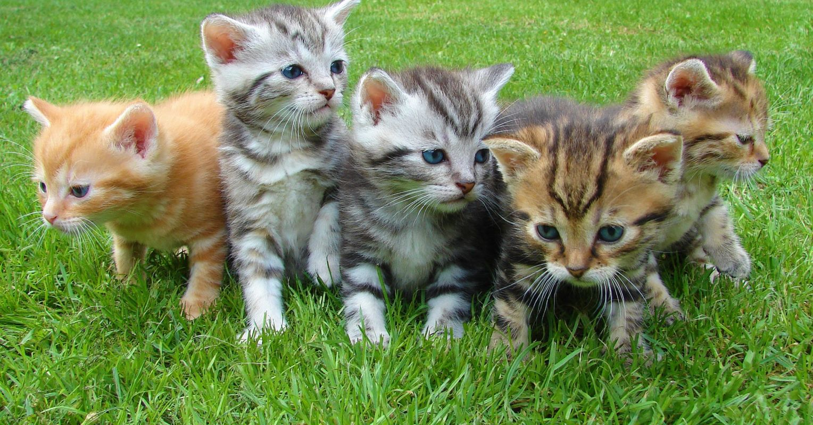

• У середньому коти витрачають 2/3 доби на сон. Тобто дев’ятирічний кіт був активний лише три роки свого життя.
• Кішки, як правило, «риють» правою лапою, а коти – лівою.
• Для того, щоб спуститися з дерева, котам потрібно відступати, задкуючи.
• Коти можуть пересуватися на максимальній швидкості близько 50 км/год. на короткі відстані.
• Вони підстрибують на висоту, більшу в п’ять разів за власний зріст.
• Коти труться об людей не тільки з ласки, але і для того, щоб позначити територію запахом залоз, розташованих навколо морди. Також запах виділяється в ділянці хвоста і лап.
• Учені не знають точно, чому кіт муркоче. Більшість ветеринарів вважає, що кішка муркоче вібрацією голосових зв’язок, розташованих глибоко в горлі. Для цього м’язи гортані відкривають і закривають прохід повітря близько 25 разів на секунду.
• У кішки в тілі 230 кісток (у людини тільки 206).
• У котів немає ключиць, тому вони можуть пролізти в будь-який отвір розміром із їхню голову.
• Поверхня носа у кішок так само унікальна, як відбитки пальців у людей.
• Серце кішки б’ється майже в два рази швидше, ніж людське (від 110 до 140 ударів на хвилину).